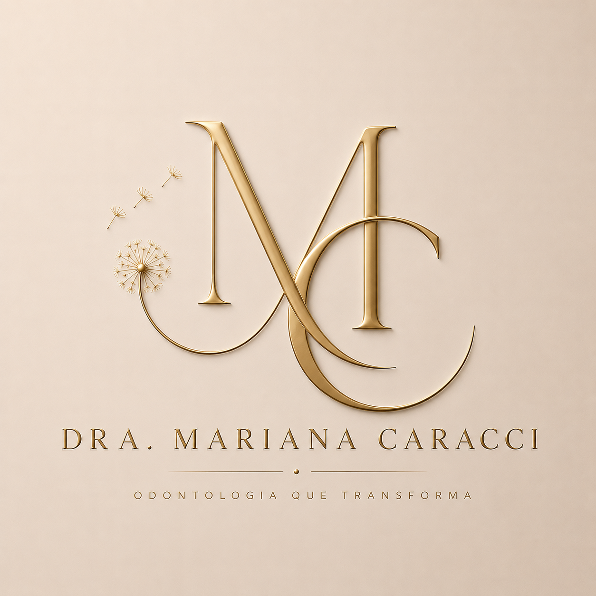

Odontologia · Nova Friburgo, RJ
Atendimento clínico com atenção, cuidado e escuta. Um espaço tranquilo para você cuidar da sua saúde bucal com conforto, acolhimento e excelência.
Agendar consulta
Sobre mim
Sou cirurgiã-dentista e venho construindo minha trajetória profissional com foco em atendimento humanizado, atenção aos detalhes e excelência clínica.
Acredito que um bom tratamento começa pela escuta, pela confiança e pelo cuidado individualizado. Atuo em Nova Friburgo desde agosto de 2025, oferecendo tratamentos voltados à saúde bucal, estética e bem-estar.
Atendimento
Correções estéticas e funcionais para dentes que apresentam cáries, fraturas ou desconfortos visuais, utilizando resina composta com acabamento natural.
Clareamento seguro e eficaz, devolvendo luminosidade ao sorriso com protocolos individualizados.
Limpeza, prevenção e acompanhamento periodontal para manter sua saúde bucal equilibrada e protegida.
Contato
Entre em contato pelo WhatsApp ou Instagram. Será um prazer receber você.